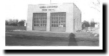
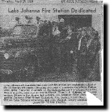

The Lake Johanna Fire Department Inc. was organized in July of 1943 by a few dedicated members residing in the New Brighton Road and Lake Johanna Blvd. area of then Mounds View Township.
This group of members solicited door to door for donations, sponsored carnivals, booyas, and other events to generate the initial capitol to provide needed fire protection to the area residents. Up to this time the area was served by the Mounds View Fire Department which was some distance away.
In the fall of 1943 their efforts became a reality, and a two bay fire station was erected by the members on property purchased by the Department at 3242 New Brighton Road. Three years later, as more service was required, a new three bay station was built just north of the original station at 3246 New Brighton Road. This is still the site of Station #1 which has undergone reconstruction in 1988.
In 1943 firefighting equipment consisted of a 1000 gallon tanker with an O.C.D. skid pump. Ernest Nelson was the Department's first Chief, Clarence Ostgarden was Assistant Chief, Earl Seaburg was Secretary, and Stanley Bartel was Treasurer. (Stanley Bartel suffered a back injury during his stay in office and was confined to the hospital. The Chief's wife took over his duties until the regular election when a new Treasurer was elected.)
In 1946 the Department mortgaged the new station to purchase a new (to the Department) fire truck. It was a 500 GPM triple combination with a 500 gallon tank giving the Department two trucks, equipment, and property valued at about $25,000.
With the incorporation of the villages of Arden Hills, Shoreview, and North Oaks and with their expanding populations, again more service was needed. In 1955 Station #2 was erected at 4676 Hodgson Road.
In 1986 Station #3 was erected at its current location because of the increase of population in northern Shoreview and North Oaks. There was a need for further protection in the southern parts of Shoreview and Arden Hills due to the fast and large developments of business parks and commercial buildings. This additional protection is provided by Station #4 which is located at 3615 Victoria Street and put into operation in the summer of 1988. Station #3 and #4 are both owned by Shoreview and in 2005 both Stations had significant remolding to meet current service demands.
Currently the Department has about 60 members. The Department utilizes 4 Engines, 2 Aerial Ladders, 1 Tanker, 1 Rescue Truck, 4 Utility Trucks, 3 Chiefs' vehicles, 1 Fire Inspectors vehicle, and 2 Water Rescue Boats.
Over the years the training of the members has expanded to include: Fire Fighter I & II, Haz-Mat Operations and EMT. Many members have additional training such as Water/Ice Rescue, Haz-Mat Technician, Ropes and Confined Space which exemplifies the progressive and dedicated attitude of the Department.